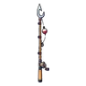
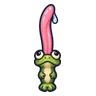
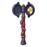
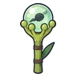
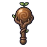
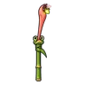
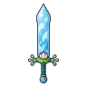
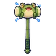
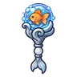

กบบึงใส
มอนธาตุน้ำ Lv 12–25
เจอที่
| แมพ | โซน | Lv | ภูมิภาค |
|---|---|---|---|
| บึงกบลำธารใส | 12–18 | ป่ากองไฟ | |
| บึงกบลำธารใส | บึงบัวใหญ่ | 16–20 | ป่ากองไฟ |
| หมู่บ้านเรือนเสาร้าง | 20–25 | ป่ากองไฟ | |
| เขื่อนบีเวอร์ร้าง | 12–19 | ป่ากองไฟ | |
| เขื่อนบีเวอร์ร้าง | เขื่อนท่อนไม้ใหญ่ | 19–22 | ป่ากองไฟ |
| ดงกกท่วมหัว | 12–19 | ป่ากองไฟ | |
| ดงกกท่วมหัว | ซุ้มซ่อนล่าเป็ด | 19–22 | ป่ากองไฟ |
| กระท่อมรมควันปลาไหล | 12–19 | ป่ากองไฟ | |
| กระท่อมรมควันปลาไหล | โรงรมควันริมน้ำ | 19–22 | ป่ากองไฟ |
| หอรากมืด (Dark Root) | รากจมน้ำ | 43–52 |
ค่าสถานะตามเลเวล
| Lv | HP | ATK | DEF | MDEF | EXP | Job |
|---|---|---|---|---|---|---|
| 12 | 1,080 | 22–33 | 2 | 4 | 15 | 11 |
| 18 | 1,537 | 31–47 | 3 | 6 | 20 | 15 |
| 25 | 1,622 | 33–50 | 4 | 9 | 26 | 20 |
ตีด้วยธาตุไหนดี
แรงขึ้น: ลม ×1.75
เบาลง: ไฟ ×0.5 น้ำ ×0.25
วัตถุดิบที่ดรอป
| ของ | โอกาส | |
|---|---|---|
| หมวกใบบัวของกบ | 62% | 1 ชิ้น (15% ได้ 2) |
อุปกรณ์ที่ดรอป (10)
| ของ | โอกาส |
|---|---|
 หอกยาวคันเบ็ด | 0.25% |
 มีดคู่ลิ้นกบ | 0.12% |
 ขวานยักษ์กระทะคู่ | 0.12% |
 ออร์บไข่กบ | 0.12% |
 ออร์บปุ่มไม้ | 0.12% |
 หอกลิ้นกบ | 0.12% |
| คัมภีร์กบบึง | 0.06% |
 ดาบใหญ่น้ำใส | 0.06% |
 ค้อนยักษ์กบพองแก้ม | 0.06% |
 ออร์บปลาทอง | 0.06% |
สกิล
ดึง (Lv 25+) · ดึง (Lv 60+) · ทุบพื้น (Lv 60+)